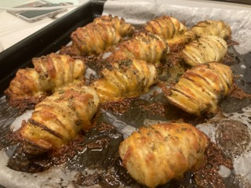

Hassleback Potato-Truly a Hassle

Description
This is the Hassleback Potato, a lovely Stockholm dish that is great for sharing.
Personally, I like to add cheese to give it an extra kick!
Ingredients
- Potatoes
- Rosemary
- Thyme
- Garlic Powder
- Shredded Cheese
- 1 Block Butter
- Olive Oil
- Salt
Steps
- Slice straight down into the potato, but stop just short of cutting all the way through. You can rest the potato on a large serving spoon to use as a guide.
- Brush the potatoes with olive oil.
- Melt the butter in a pot, add rosemary, thyme, garlic powder in the mix.
- Brush the potatoes with the mixture, going in between each slice.
- Put potatoes in oven at 300 Degrees Celcius for 45 minutes.
- Take potatoes out of the oven and begin putting the cheese in between the potato slices.
- Place potatoes back into the oven for another 15 minutes.
- Enjoy!